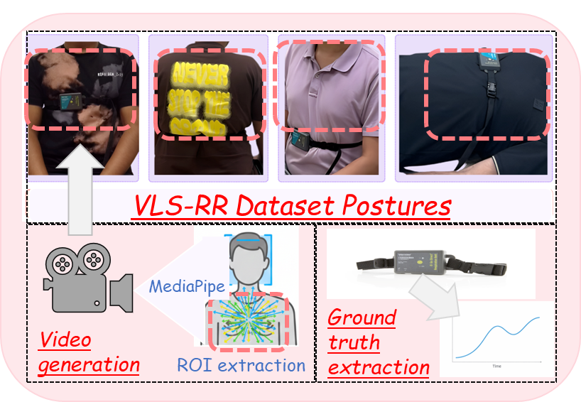
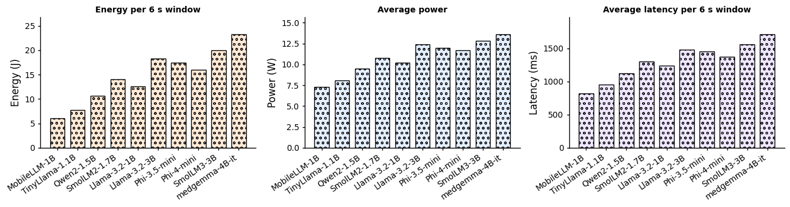
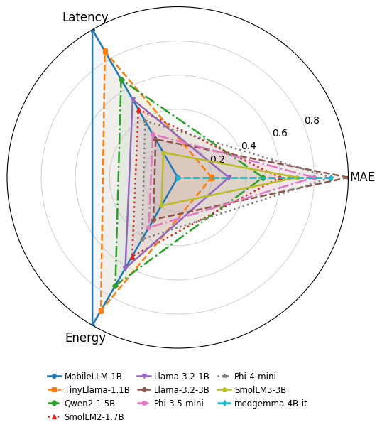
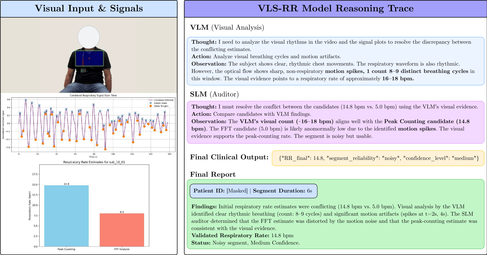

CALIBRA: Calibration-Aware Multi-Agent Verification for Contactless Physiological Monitoring
34.4%
MAE reduction over zero-shot prompting with Gemini-2.5-Flash
31.0%
MAE reduction over zero-shot prompting with GPT-4o
93%
Coverage in routed mode at 4.1 s average latency and 1.6 GB peak memory

Abstract
Contactless physiological monitoring offers a promising path toward low-burden health sensing, but reliable inference from short video segments remains difficult when visual evidence is weak, corrupted by motion, or spectrally ambiguous. We present CALIBRA, a calibration-aware multi-agent framework for contactless respiratory rate (RR) estimation that treats prediction as an evidence-grounded verification problem rather than a one-shot prompting task. CALIBRA operates on a structured artifact bundle with lightweight signal-derived candidate rates, and performs routing, specialized vision-language evidence analysis, critic-based consistency checking, targeted repair, and calibrated arbitration with optional abstention. On our in-house benchmark, CALIBRA consistently outperforms prompting-only baselines across multiple backbones. With Gemini-2.5-Flash, it reduces mean absolute error (MAE) from 5.21 to 3.42, corresponding to a 34.4% reduction over zero-shot prompting and a 16.8% reduction over chain-of-thought prompting. With GPT-4o, it reduces MAE from 5.48 to 3.78, a 31.0% reduction over zero-shot prompting. CALIBRA also improves grounding and consistency in judge-based evaluation, indicating better evidence alignment beyond numerical accuracy alone. Under resource constraints, a routed configuration maintains 93% coverage at 4.1 s average latency and 1.6 GB peak memory. These results show that robust contactless physiological inference depends not only on stronger multimodal backbones, but also on explicit verification of whether predictions are supported by the available evidence.
Why CALIBRA
Prompt-only inference can fail quietly
Difficult segments often contain motion corruption, weak periodicity, or harmonic ambiguity. A model can still output a plausible respiratory rate even when the evidence is inconsistent.
Verification improves decision discipline
CALIBRA checks candidate rates against structured evidence, selectively repairs conflicts, and commits only after consistency improves.
Reliability matters in deployment
The framework can abstain when evidence is not coherent enough, improving calibration and safety instead of forcing unreliable predictions.
Method
Each segment is represented as a four-view artifact bundle with an annotated frame, respiratory signal plot, optical-flow summary, and histogram view, together with deterministic candidate respiratory rates. The framework first estimates whether a segment appears easy or ambiguous, then routes it through specialized agents that inspect waveform structure, motion quality, visual periodicity, and disagreement between candidate estimates. A critic module aggregates the evidence, checks consistency, and flags conflicts. When needed, a repair stage revisits uncertain evidence and updates the preferred interpretation before an arbiter produces the final respiratory-rate estimate together with a calibrated confidence decision. This design allows CALIBRA to move beyond one-pass prompting and instead make decisions through explicit evidence checking and controlled refinement.

Overview of CALIBRA’s evidence-grounded verification pipeline.
Model's Performance
Main benchmark results
lower is better| Method | MAE ↓ | RMSE ↓ | Bias ↓ |
|---|---|---|---|
| CALIBRA (Gemini-2.5-Flash) | 3.42 | 4.88 | 0.29 |
| CALIBRA (GPT-4o) | 3.78 | 5.26 | 0.34 |
| CALIBRA (Qwen3-VL-8B) | 4.35 | 5.92 | 0.41 |
| CALIBRA (DeepSeek-R1-7B) | 4.58 | 6.15 | 0.45 |
| CALIBRA (InternVL3-8B) | 4.71 | 6.28 | 0.47 |
Judge-based output quality
higher is better| Model / Setting | Grounding ↑ | Consistency ↑ | Rationale ↑ | Confidence ↑ | Plausibility ↑ |
|---|---|---|---|---|---|
| GPT-4o (CoT) | 7.6 | 7.4 | 7.3 | 7.0 | 7.5 |
| GPT-4o (CALIBRA) | 8.6 | 8.4 | 8.2 | 8.1 | 8.5 |
| Qwen3-VL-8B (CoT) | 7.1 | 6.9 | 6.8 | 6.7 | 7.0 |
| Qwen3-VL-8B (CALIBRA) | 8.0 | 7.8 | 7.6 | 7.5 | 7.9 |
| Gemini-2.5-Flash (CALIBRA) | 8.9 | 8.7 | 8.5 | 8.6 | 8.8 |
Deployment efficiency
latency vs coverage| System / Mode | Avg. Latency ↓ (s) | P95 Latency ↓ (s) | Peak RAM ↓ (GB) | Coverage ↑ (%) |
|---|---|---|---|---|
| Deterministic (FFT+Peak) | 0.03 | 0.05 | 0.35 | 100 |
| Single-agent (CoT) | 2.4 | 5.1 | 1.1 | 98 |
| CALIBRA (Routed mix) | 4.1 | 8.7 | 1.6 | 93 |
| CALIBRA (Strict pass@3) | 7.8 | 15.6 | 1.9 | 91 |

Segment-level MAE for prompting baselines and CALIBRA across backbones.
Qualitative Results

A representative challenging segment where CALIBRA resolves the final prediction through routing, evidence verification, and calibrated arbitration.
Ablation
The main gains come from routing, critic checks, repair, and calibrated abstention.

Component ablation of CALIBRA on the best-performing configuration.
BibTeX
@InProceedings{Sakib_2026_CVPR,
author = {Sakib, Shadman and Shinde, Gaurav and Roy, Nirmalya},
title = {CALIBRA: Calibration-Aware Multi-Agent Verification for Contactless Physiological Monitoring},
booktitle = {Proceedings of the IEEE/CVF Conference on Computer Vision and Pattern Recognition Workshops (CVPRW)},
year = {2026}
}